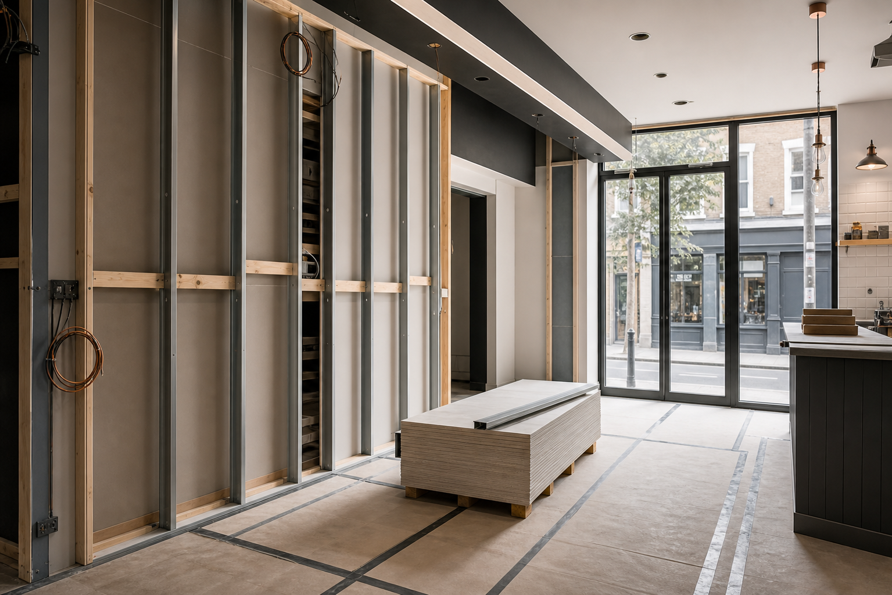
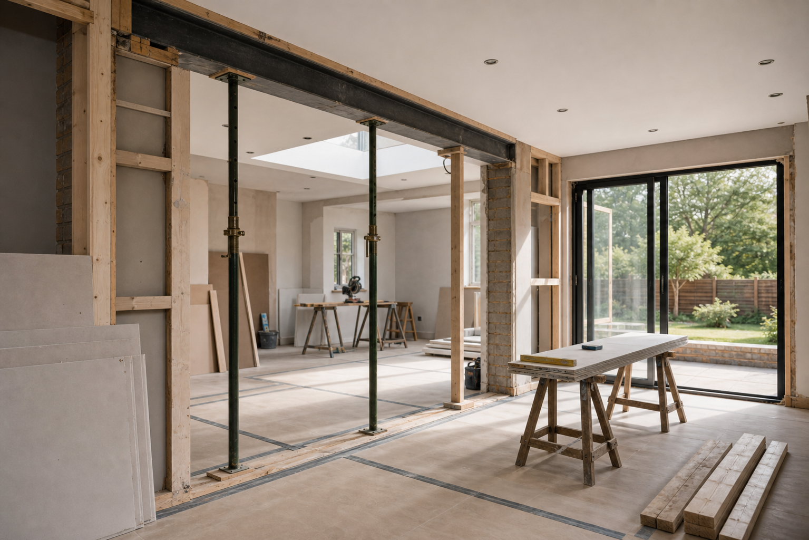
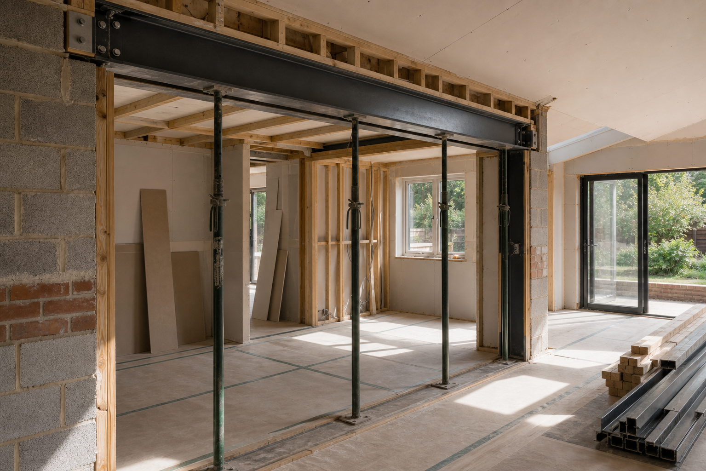
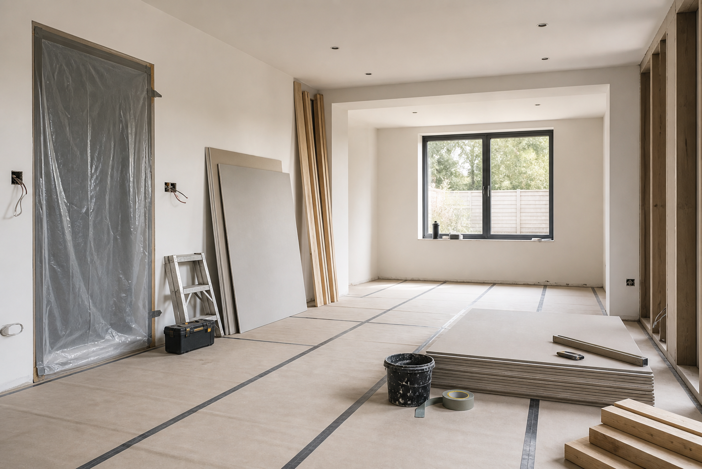
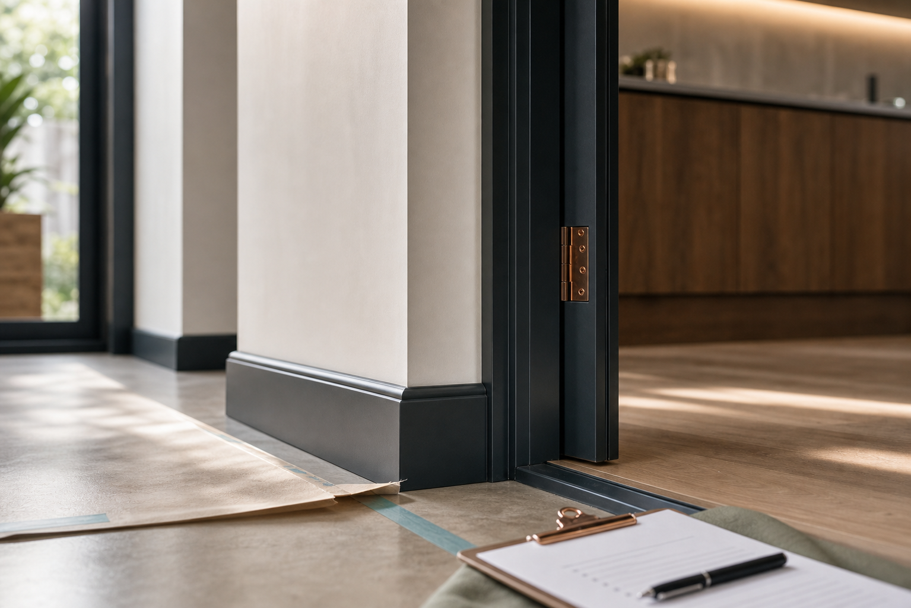
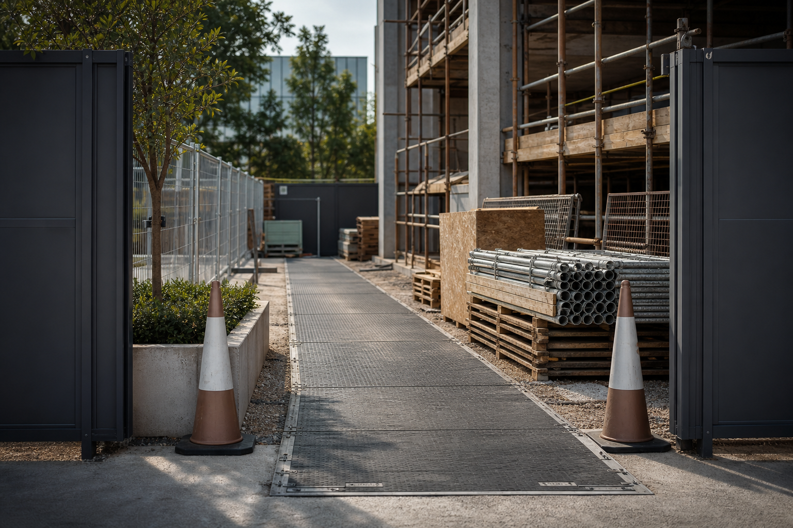
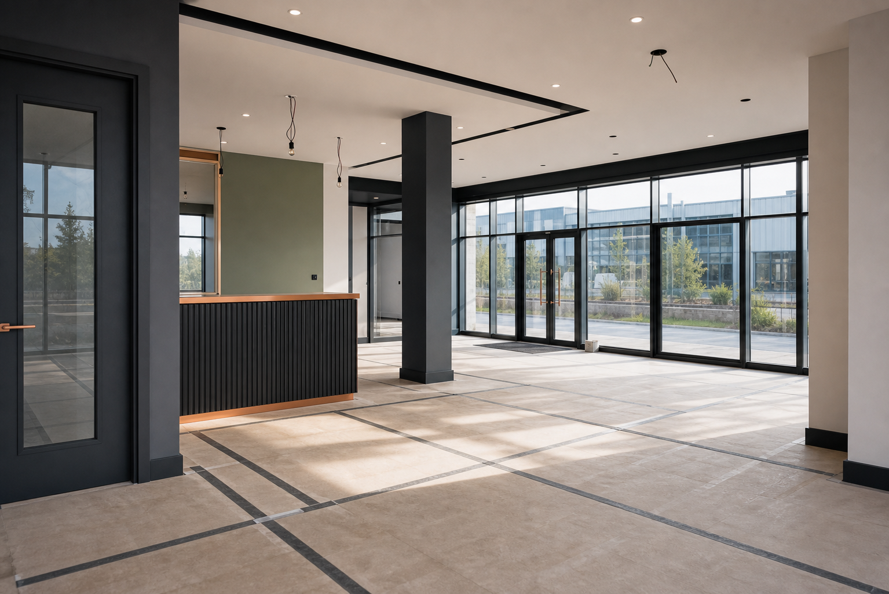

Commercial
Construction of commercial buildings
Works for business properties, small commercial units, shopfront-ready spaces, internal alterations, structural support and practical upgrades.
Services
RS BuildPro Ltd is categorised for construction of commercial buildings, construction of domestic buildings and other construction installation. The service pages are shaped around those exact workstreams.

Works for business properties, small commercial units, shopfront-ready spaces, internal alterations, structural support and practical upgrades.

Residential build support for refurbishments, extensions, reconfiguration, repairs, finishes and everyday improvements.

Installation-focused construction support for site elements, building features, fixtures, preparation works and final-stage coordination.
Before starting, the team clarifies the task, access, likely stages and the finish expected, so the job can move with fewer surprises.

The work is broken into practical stages: preparation, build, installation, finish and handover checks.

Materials, access, maintenance and day-to-day function are considered alongside the look of the completed space.

Site access, storage, working areas and occupied spaces are considered early so the build can run with less friction.

Installation requirements are coordinated with the surrounding surfaces, structure and final use of the space.